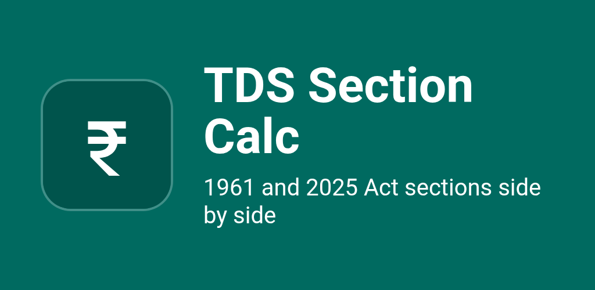

Calculadora TDS India
Calcula el TDS por sección, con la numeración de ambas leyes y vencimientos.



Acerca de la app
Calcula el TDS de pagos no salariales en segundos. Elige el tipo de pago, introduce el importe y verás el TDS, el tipo, el neto a pagar y la sección, con los dos sistemas de numeración. TDS Section Calc cubre el ejercicio 2025-26 (Income-tax Act 1961) y 2026-27 (Income-tax Act 2025). Cada resultado muestra juntos los números de sección antiguo y nuevo, para pasar a la nueva ley sin tablas de equivalencias. La app no tiene acceso a internet. Los tipos, umbrales y números de sección vienen incluidos y solo cambian con las actualizaciones de la app. INCLUIDO EN LA APP GRATUITA • Calculadora de TDS para pagos no salariales: contratistas, alquileres, honorarios profesionales y técnicos, comisiones, intereses, compra de bienes, inmuebles y más • Números de sección antiguo y nuevo en cada resultado y en la tabla de tipos • Selector de ejercicio: 2025-26 (ley de 1961) y 2026-27 (ley de 2025) • Control de umbrales por pago, por mes (alquiler) y por ejercicio, con una nota cuando hay un límite acumulado • PAN indicado o no: se aplica automáticamente el tipo más alto sin PAN • Persona física/HUF y Otros, donde los tipos son distintos • Tabla de tipos con búsqueda, con tipos, umbrales y notas de cada sección • Calendario de vencimientos: ingresos mensuales (día 7, y 30 de abril para marzo) y declaraciones trimestrales de TDS • Widget en la pantalla de inicio con el próximo vencimiento de TDS y los días que faltan • Fecha de los tipos y versión de la app en cada resultado • Tema claro y oscuro según el sistema, diseños para móvil y tableta, etiquetas para lectores de pantalla FUNCIONES PRO (compra única en Google Play, sin suscripción) • Beneficiarios guardados con PAN, tipo y sección por defecto, cifrados en tu teléfono • Certificados de retención reducida o nula con tipo, vigencia y límite. La calculadora usa el tipo del certificado mientras sea válido y esté dentro del límite • Historial de cálculos por beneficiario y control de umbrales acumulados en el ejercicio • Exportación de la hoja de trabajo a PDF o Excel (.xlsx) desde el menú de compartir. El PAN se oculta por defecto • Recordatorios de vencimientos de 1 a 7 días antes • Calculadora de intereses y recargos: retención tardía, ingreso tardío y presentación tardía • Copia de seguridad y restauración protegidas con contraseña mediante el selector de archivos • Bloqueo de la app con huella, rostro o bloqueo de pantalla TUS DATOS • Sin cuenta y sin seguimiento. La app no tiene permiso de internet • Los datos de beneficiarios se cifran en tu teléfono con una clave guardada en el Android Keystore • Excluida de la copia de seguridad en la nube. Tus datos solo salen del teléfono si los exportas o haces una copia • Los recordatorios y el widget muestran solo fechas, nunca nombres ni PAN Pensada para pequeñas empresas, contables y CA, y autónomos que retienen TDS en pagos a contratistas, arrendadores, profesionales y agentes. Aviso: los resultados son estimaciones y no constituyen asesoramiento fiscal. Consulta la ley, el reglamento y las notificaciones antes de retener, ingresar o presentar. No se cubren el TDS de nóminas (s.192), el TCS, los pagos a no residentes ni la presentación de declaraciones.